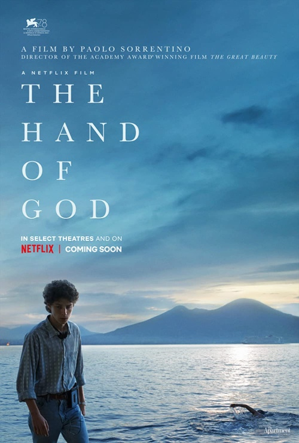

Тогда мне казалось, что “жить прошлым” — это точный диагноз. Сегодня я думаю, что это приговор. — Тимофей Радя
Тогда мне казалось, что “жить прошлым” — это точный диагноз. Сегодня я думаю, что это приговор. — Тимофей Радя
Сын (3 года) просит купить арбуз:
— Леш, давай купим арбуз?
— Не хочу
— Почему?
— Ну, а вдруг он будет невкусным?
Захар:
— А вдруг он будет вкусным?
Ахах.
Купили.
Вкусный.
Совершенно офигительное и подробное описание устройства наручных механических часов (eng).
Whatever you do will be insignificant, but it is very important that you do it. — Mahatma Gandhi
via reminder.media

Очень приятное кино!

Классное японское кино по рассказу Харуки Мурками.
Хорошее интервью Александра Роднянского:
Вы знаете, я постоянно повторяю одну и ту же вещь, в которую я верю. И мне кажется, она важная. Я полагаю, что главной болезнью современной России является невероятно зашкаливающий цинизм, неверие в наличие подлинных целей, подлинных ценностей, идей и принципов. Это такое господствующее убеждение в том, что идей, принципов и ценностей нет ни у кого. Просто есть те, кто хорошо это скрывают. А есть мы, честные, которые говорят как есть - у нас их [принципов и ценностей] нет.
Мы говорим: вот есть враги и есть только вечные интересы. Это такая на самом деле концепция XIX века, времен, когда складывались национальные государства и огромные империи. И когда в качестве ключевого критерия предлагался интерес конкретного государства.
Но мы живем в другие времена - в которые, в особенности после Второй мировой войны, как это ни наивно звучит, Декларация прав человека и вера в индивидуальные свободы, верховенство права, независимый суд, независимые медиа являются среди прочего гарантом выживания человечества.
Человечество после Второй мировой войны придумало совершенно другой способ выживания, оно придумало возможность сосуществования разных государств, связанных между собой торговыми, экономическими отношениями. Вот так возник Европейский союз, и страны, которые столетия воевали - Франция и Германия - стали платформой объединения Европы в единое целое.
Россия, в силу своей циничных времен советской истории, утратив веру в лучшее, естественно, не верит в то, что ЕС основан на принципах, на идеях, на европейской цивилизации, которая столетиями выработала в себе этот иммунитет культурный и нравственный по отношению к тому, о чем мы говорим. Соответственно, лидеры российской сегодняшней идеологии - они лидеры современного цинизма.
И еще:
Мне кажется, это классическая агония. Ну просто агония может продолжаться долго. Может коротко, а может и пять лет будет, и 10. На данном этапе санкции в отношении России намного жестче, чем в 1980-е годы во время войны в Афганистане. И у России нет ничего - ни вариантов, ни союзников, ни понимания, ни идеологии, которую она может предложить. Есть безумная обида и желание мести - и больше ничего.
Люди, которые управляют страной, прекрасно понимают, что у них нет больше шансов, с ними никто за стол переговоров не сядет и ничего обсуждать не будет. Шансов передоговориться - тем более на каких-то условиях, на которых они мечтают устроить мир как-то иначе. Сейчас идет война не столько против Украины и даже не против США, а против мирового порядка - он не устраивает. Недостаточно много места дали, и хочется туда, в 1945 год, но не получается. Это ментальная ловушка, застряли в исторической ментальной ловушке.
Российское общество "Мемориал" было ликвидировано 28 февраля 2022 года.